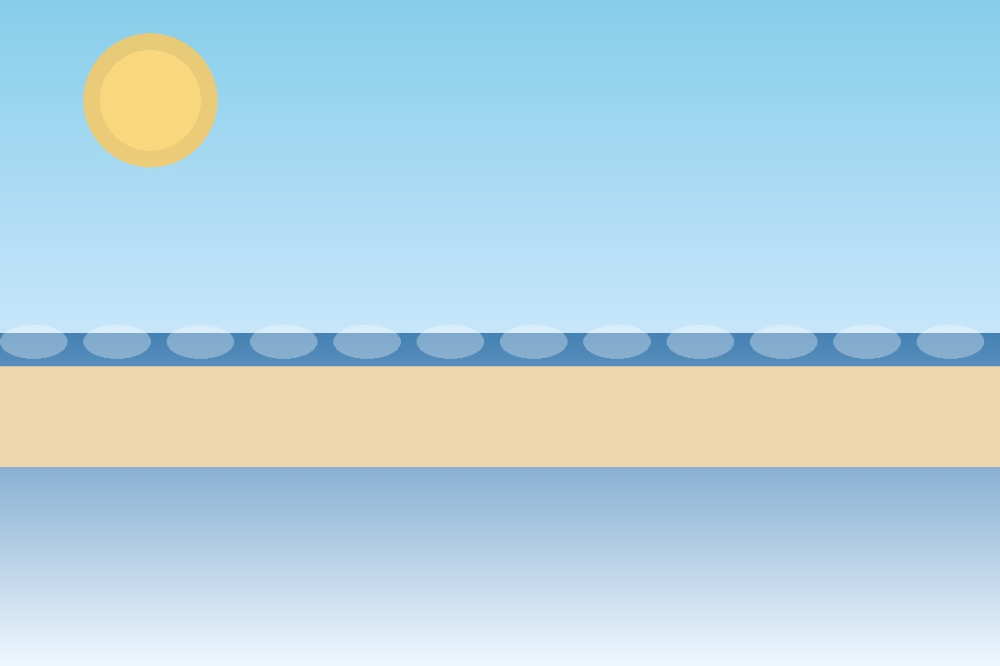
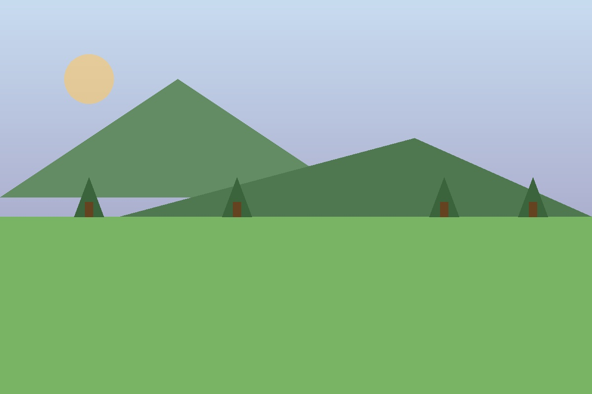

A Soul That Finds Peace in Nature, Spirituality, and Adventure
Sulekha's hobbies reveal a spirit drawn to beauty, spirituality, and the wonders of our world
Away from the corporate world, Sulekha finds her truest self in nature's embrace. Whether visiting sacred temples to deepen her spiritual connection, relaxing on peaceful beaches to find tranquility, or exploring misty hill stations for adventure—every journey feeds her soul and expands her perspective.


A profound connection to sacred spaces. Visiting temples brings her peace, reflection, and a deeper understanding of her spiritual self. Each visit is a pilgrimage of the heart.
The rhythm of the ocean speaks to her soul. Beaches offer her a space for contemplation, joy, and connection with nature's timeless beauty.
Misty mountains and cool breezes call to her adventurous spirit. Hill stations provide adventures, fresh air, and stunning vistas that refresh her mind and body.
Every journey expands her horizons. Whether near or far, Sulekha believes travel teaches empathy, wonder, and the interconnectedness of all beings.
"Travel is the only thing you buy that makes you richer."
— A traveler's wisdom
"In every temple, every beach, every mountain lies a piece of our soul waiting to be discovered."
— Sulekha's perspective
"The soul wanders freely where the spirit finds peace."
— A spiritual truth
Snapshots of joy, reflection, and adventure
Whether standing before ancient temple walls, feeling the sand between her toes at sunset, or breathing in the crisp mountain air, Sulekha finds her center in nature. These moments of solitude and wonder recharge her spirit and remind her of life's deeper meanings.
Her love for these places isn't just about sightseeing—it's about spiritual awakening, personal reflection, and connection to something greater than herself.
"Travel leaves you speechless, then turns you into a storyteller. Sulekha's adventures enrich not just her life, but the lives of those who hear her tales."